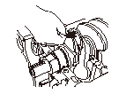
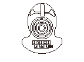
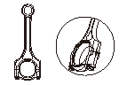
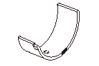

コンロッド ベアリングの点検、交換
オイル クリアランスの点検
•
測定は必ず軸方向で行う。
•
締付けはクランクシャフトを絶対に回さず、中央より対角線上に均一に締付ける。
ベアリング キャップを取外す。
コンロッド キャップを取外す。
クランクシャフトのピン ジャーナルおよびベアリングを洗浄する。
ベアリングおよびキャップを取付け、規定トルクで締付ける。
規定トルク:
9.8N･m(1.0kgf･m)＋90°
キャップおよびベアリングを取外し、プラスチゲージを軸方向の長さに切り、クランクシャフト ピン ジャーナルの上に置く。
再びベアリングおよびキャップを取付け、規定トルクで締付ける。
キャップおよびベアリングを取外し、プラスチゲージのつぶれた幅をプラスチゲージの袋に印刷されているスケールで測定する。
•
限度値以上の場合はコンロッドの拡大、ピンの摩耗を点検し、異常のない場合は、コンロッド ベアリング識別表でアンダ サイズのベアリングに交換し、再度オイル クリアランスを測定する。
測定は最も幅広く圧着された箇所で行う。
ピン オイル クリアランス
標準値:
0.020－0.038mm
限度値:
0.050mm

交換
クランクシャフト ピン ジャーナルの嵌合マークを調べる。
嵌合マークが見えない場合、ワイヤ ブラシ、ドライバなどで擦らないこと。洗い油などで洗浄し確認する。
ピン ジャーナルの嵌合マーク位置

コンロッドの嵌合マークを調べる。
嵌合マークが見えない場合、ワイヤ ブラシ、ドライバなどで擦らないこと。洗い油などで洗浄し確認する。
コンロッド穴径の嵌合マーク位置

ベアリング識別表
ベアリングの識別色（A）が、青黒茶緑黄桃赤白の順で、各公差が0.003mmおきのベアリングが用意されている。
マーク
識別色
公差
G
赤
－0.005－－0.002mm
F
桃
－0.002－＋0.001mm
E
黄
＋0.001－＋0.004mm
D
緑
＋0.004－＋0.007mm
C
茶
＋0.007－＋0.010mm
B
黒
＋0.010－＋0.013mm
A
青
＋0.013－＋0.016mm
ベアリング中央肉厚寸法
1.5mm

ベアリング嵌合表
オイル クリアランスはクラッシュによるハウジング拡大量を見込んだものである。
オイル クリアランスはあらかじめが
0.020
－
0.038mm
に選択嵌合されている。
この嵌合表だけで合わせず、必ずオイル クリアランスを測定し確認する。
ピン ジャーナルの嵌合マーク
コンロッド穴径の嵌合マーク
1
2
3
4
ベアリング識別色
A
赤
桃
黄
緑
B
桃
黄
緑
茶
C
黄
緑
茶
黒
D
緑
茶
黒
青